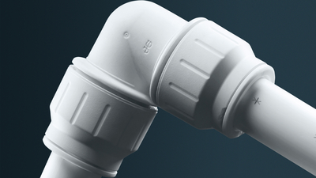
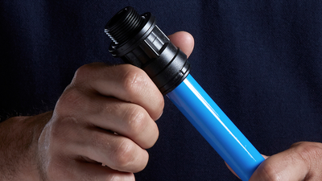
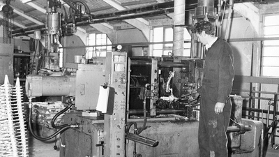
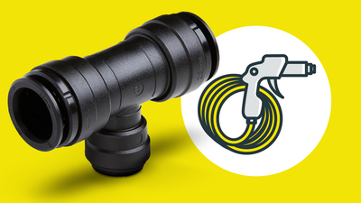
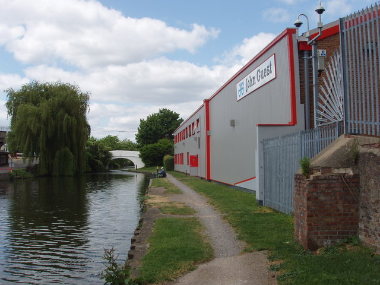
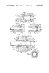
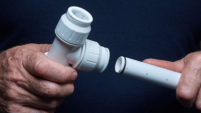

How a push-fit fitting works
The basic idea is elegant: let the tube slide in easily, stop it at the right depth, grip it if it tries to come back out, and seal it with an O-ring. The same principle works across liquids and gases, although the exact materials and ratings vary by application.
1
Insert
A square-cut tube passes through the mouth of the fitting and into the collet.
A square-cut tube passes through the mouth of the fitting and into the collet.
2
Grip
Stainless-steel teeth flex during insertion, then bite if the tube tries to withdraw.
Stainless-steel teeth flex during insertion, then bite if the tube tries to withdraw.
3
Seal
An elastomer O-ring seals around the tube outer diameter. Pressure generally reinforces the seal rather than loosening it.
An elastomer O-ring seals around the tube outer diameter. Pressure generally reinforces the seal rather than loosening it.
4
Stop & release
An internal shoulder sets insertion depth. To demount, press the collet to release the grab ring.
An internal shoulder sets insertion depth. To demount, press the collet to release the grab ring.
Needs a square cut
Deburr before insertion
Compatible ratings matter
Same concept, different materials

Key developments in the history
John Guest did not invent pipe fitting itself; the leap was making a fitting that was fast, tool-free, demountable, and reliable enough to spread across multiple industries.
1961
Company founded
John Guest starts in precision engineering and toolmaking in the UK.
1970
Production expands
Complex die-cast and machined components are made for pneumatic valve manufacturers.
1974
Super Speedfit
The first push-fit solution for compressed air appears — a major shift from threaded and compression-heavy workflows.
1983–84
Food-grade and microduct growth
The push-fit concept spreads into drinks, blown fibre microducts, and automotive fuel connections.
1987
Plumbing transformation
JG Speedfit launches for plumbing and heating, bringing the concept into domestic and commercial building services.
2005
Twist & Lock
Locking and multi-seal refinements add confidence and usability for installers.



Predecessors: what push-fit replaced or competed with
Push-fit did not emerge in a vacuum. It sits in a long lineage of joining technologies, each with tradeoffs in speed, skill, reusability, heat, and vibration resistance.
Earlier
Soldered / brazed joints
For copper plumbing, soldering had long been the standard. It was strong and proven, but slower, skill-dependent, and involved heat, flux, and fire risk.
- Strong and compact
- Requires torch, prep, cleaning, and drying
- Awkward in tight or combustible spaces
Intermediate
Compression and flare fittings
These avoided heat but still needed nuts, olives/ferrules, spanners, torque judgment, and more assembly time. They remained important, especially for metal tube.
- No flame required
- Mechanically serviceable
- Slower than push-fit and easier to overtighten or undertighten
Push-fit era
Push-fit connectors
John Guest style fittings collapsed several installer actions into one movement: insert to depth, grip, seal. That made them especially attractive in repetitive, awkward, or rapid-install work.
- Fast, tool-free connection
- No hot works
- Demountable designs available

Why this mattered
What made John Guest style push-fit fittings historically important was not only the sealing idea, but the way manufacturing, plastics, elastomers, spring-metal gripping elements, and controlled tolerances were brought together into a mass-producible system.
That systems view is why the same basic principle could jump from:
Compressed air
Potable water
Beer dispense
Water treatment
Telecoms microduct
Automotive fluid lines
In other words: the fitting became a platform, not just a product.
Image gallery
All images below are genuine source images from the web, mainly official John Guest pages plus Geograph and Google Patents.

Research & image sources
Core factual points were cross-checked against official John Guest/RWC history and technical pages, plus engineering explainers and patent material.